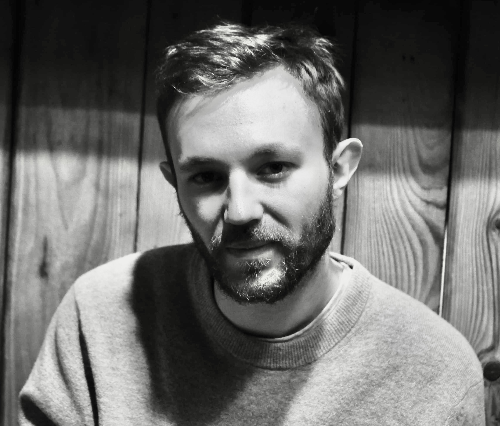

I am a PhD student in applied mathematics at CMAP - école polytechnique. My PhD subject is about First-passage and last-passage percolation, and my supervisors are Anne-Laure Basdevant and Lucas Gerin.
Currently: PhD in applied mathematics
CMAP, école polytechnique
2019-2023: Magistère of mathematics
Université Paris-Saclay
2022-2023: Master 2: Mathématiques de l'aléatoire
Université Paris-Saclay
2021-2022: Agrégation de mathématiques
Université Paris-Saclay
Address:
Centre de Mathématiques appliquées,
Ecole polytechnique,
Route de Saclay,
91128 Palaiseau Cedex
Office number: 2016
E-mail: maxime.marivain@polytechnique.edu